ビューアの操作
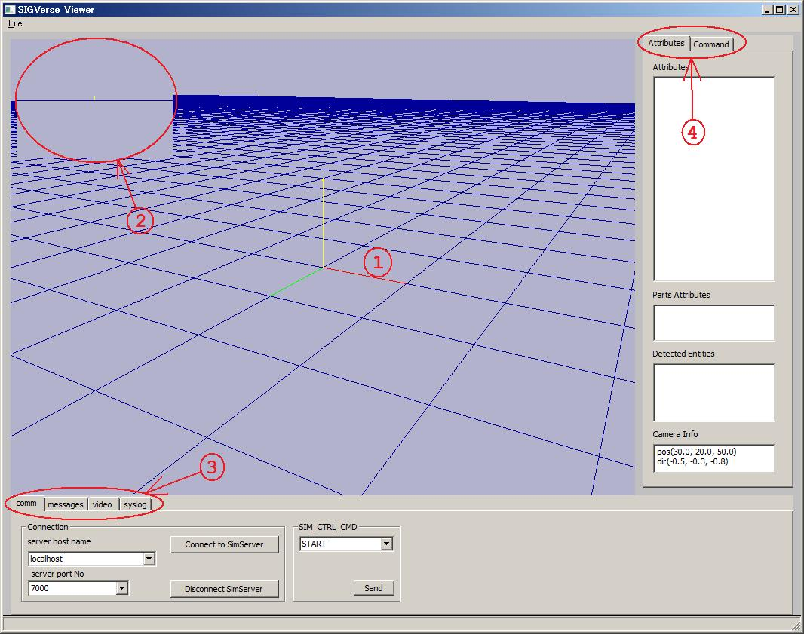
(1) メインウィンドウ
(2) サブウィンドウ
(3) 画面下パネル選択タブ
(4) 画面右パネル選択タブ
以下に各部の簡単な説明を行います.
視点の移動
マウスの右ボタンをクリックしながらドラッグすると，視点を移動できます
| 操作 |
SIGViewerの動作 |
| 右ボタンを押しながらドラッグ |
視点の回転 |
| 右ボタン＋SHIFTキーを押しながらドラッグ |
視点の移動（上下・左右） |
| 右ボタン＋CTRLキーを押しながらドラッグ |
視点の移動（奥行き） |
物体の選択
マウスを左クリックすると，カーソルの位置にある物体を選択できます．
また，左クリックしたままマウスをドラッグすると，物体の移動，回転ができます．
| 操作 |
SIGViewerの動作 |
| 左ボタンをクリック |
物体を選択 |
| 左ボタンを押しながらドラッグ |
物体の回転 |
| 左ボタン＋SHIFTキーを押しながらドラッグ |
物体の移動（上下・左右） |
| 左ボタン＋CTRLキーを押しながらドラッグ |
物体の移動（奥行き） |
マウスで選択したエージェントの視点から世界を眺めた画像が表示されます
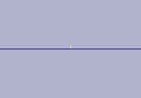
サブウィンドウは1つ（単眼視点）または2つ（複眼視点）表示できます．
この切り替えは設定ファイル(startup.cfg)により行います．
commタブ
サーバーとの通信操作を行います
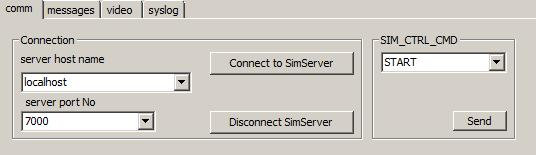
-
「server host name」エリア
-
シミュレーションサーバーのホスト名を指定します．
直接ホスト名を入力するか、ドロップダウンリストの中から選びます．
-
「server port No」エリア
-
シミュレーションサーバーのポート番号を指定します．
直接ポート番号を入力するか、ドロップダウンリストの中から選びます．
-
「Connect to SimServer」ボタン
-
シミュレーションサーバーに接続します．
-
「Disconnect SimServer」ボタン
-
シミュレーションサーバーとの接続を切ります．
-
「SIM_CTRL_CMD」エリア
-
シミュレーションの開始、停止をします．
ドロップダウンリストから「START」「STOP」等のコマンドを選び，「Send」ボタンを押すと，選択したコマンドがサーバーに送信されます．
messageタブ
エージェントの発話が表示されます
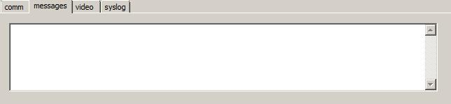
videoタブ
シミュレーション状況の録画・再生を行います
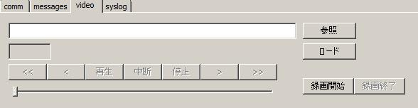
-
(1) ビデオファイル名入力エリア
-
再生・録画対象となるビデオファイル名を入力します
ビデオファイルの拡張子は.svd (SIGVerse Video形式 -- 独自フォーマット）です
-
(2) 「参照」ボタン
-
ビデオファイルの名前を指定するダイアログが開きます．
ファイルを選択すると、選択したファイルへのパスが(1)のビデオファイル名入力エリアに表示されます．
-
(3)「ロード」ボタン
-
(1)のビデオファイル名入力エリアに書かれているビデオファイルをSIGViewerにロードします．
-
(4)ビデオ再生コントロール用ボタン
-
(3)ボタンを押してロードしたビデオを再生します．
再生開始、中断、巻き戻し、早送り等が行えます．
-
(5)「録画開始」「録画終了」ボタン
-
「録画開始」を押すと，現在のシミュレーションの進行状況の記録を始めます．
「録画終了」を押すと，記録結果を(1)で指定したファイルにセーブします．
syslogタブ
システムのログ情報が表示されます
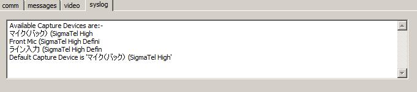
Attributesタブ
エージェントの属性や，その他の情報が表示されます
-
Attributes
-
選択中のエージェントの属性が表示されます
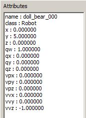
表示される属性は、startup.cfgのATTR_NAMES_TO_SHOWで指定できます．
（何も指定しない場合は、すべての属性が表示されます）
-
Parts Attributes
-
選択中のエージェントがOpenHRPヒューマノイド形状だった場合、選択した部位（腕、足など）の位置、向きが表示されます．（位置、向きの値は世界座標系における絶対座標）
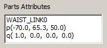
-
Detected Entities
-
選択中のエージェントの視点から見える他のエージェントまたはエンティティの名前が表示されます
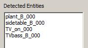
-
Camera Info
-
メインカメラ（メインウィンドウの画像を映しているカメラ）の位置、方向が表示されます．
この値を、startup.cfgのMAIN_CAMERA_INIT_POS, MAIN_CAMERA_INIT_DIRに設定すれば、任意の視点からの眺めで起動することができます．
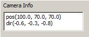
Commandタブ
エージェントにコマンドを送信します．
タブの直下にあるコンボボックスで、コントローラに送るメッセージが変わります.
現時点では「general」と「voice」の2つのタブがあります．
-
general
-
エージェントに任意のメッセージを送るためのパネルです
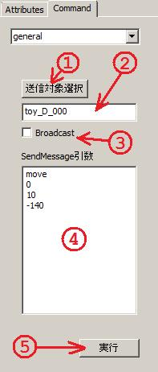
(1), (2), (3) メッセージの送信対象となるエージェント名を指定します．
「送信対象選択」ボタンを押すと，エージェント選択モードになり，画面上のエージェントをクリックすると自動的にエージェントの名前が(2)に表示されます．
または直接(2)にエージェント名をキーボードから入力しても構いません．
「Broadcast」にチェックを入れた場合は、(2)に無関係にすべてのコントローラにメッセージがブロードキャストされます．
(4) エージェントに送信するメッセージを入力するエリアです
各行につき、1つの文字列になります
(5) エージェント（のコントローラ）へメッセージを送ります．
例えば上記の画面の例では, "move", "0", "10", "-140"の4つの文字列がtoy_D_000に送られます．
-
voice
-
エージェントに音声データを送るためのパネルです
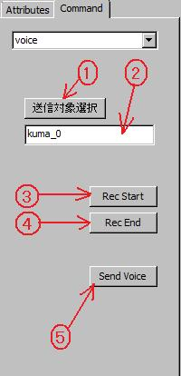
(1), (2) メッセージの送信対象となるエージェント名を指定します．
「送信対象選択」ボタンを押すと，エージェント選択モードになり，画面上のエージェントをクリックすると自動的にエージェントの名前が(2)に表示されます．
直接(2)にエージェント名をキーボードから入力しても構いません．
(3) 「Rec Start」ボタンを押すと、マイクから音声取り込みを開始します．
(4) 「Rec End」ボタンを押すと、マイクからの音声取り込みを終了し、取り込んだ音声データをcapture.wavというファイルにセーブします．
(5) 「Send Voice」ボタンを押すと、エージェントに送信するwaveファイルを指定するファイル指定ダイアログが開きます．取り込んだcapture.wavファイルを指定してください．（または任意の.wavファイルを指定してエージェントに送信することもできます）
送信された音声データはコントローラのonRecvSound()メソッドで受け取ることができます．
 （株）数理システム
（株）数理システム